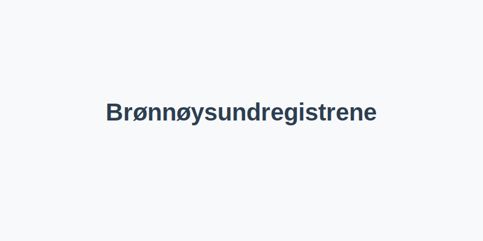

Brønnøysundregistrene er et offentlig forvaltningsorgan under Nærings- og fiskeridepartementet som administrerer flere sentrale norske registre. Dette inkluderer blant annet Enhetsregisteret, Foretaksregisteret, Regnskapsregisteret og MVA-registeret, som alle er essensielle for norske virksomheters juridiske og regnskapsmessige status.

Hovedregistre
| Register | Beskrivelse |
|---|---|
| Enhetsregisteret | Grunnleggende registrering av alle juridiske enheter i Norge og tildeling av organisasjonsnummer. |
| Foretaksregisteret | Registrering av aksjeselskaper, ansvarlige selskaper, kommandittselskaper og andre selskapsformer. |
| Regnskapsregisteret | Innsending og offentliggjøring av årsregnskap for norske selskaper. |
| MVA-registeret | Registrering av virksomheter med merverdiavgiftsplikt. |
Viktige funksjoner og tjenester
- Tildeling av organisasjonsnummer: Gjennom Enhetsregisteret får alle virksomheter et unikt organisasjonsnummer.
- Selskapsregistrering: Opprettelse, endring og sletting av selskaper i Foretaksregisteret.
- Offentliggjøring av regnskap: Innsending og publisering av årsregnskap i Regnskapsregisteret.
- MVA-registrering: Registrering av merverdiavgiftspliktige virksomheter.
Digitale løsninger
Brønnøysundregistrene tilbyr flere digitale tjenester for effektiv registrering og innsyn:
- Altinn – sentral portal for skjema, innlevering og dialog med offentlige registre.
- API-integrasjon – sanntidsoppdatering og automatiserte arbeidsflyter.
- Nettjenester – direkte søk og nedlasting av informasjon via Brønnøysundregistrenes nettsider.
- Firmaattest – Offisielt dokument som bekrefter registrerte opplysninger om selskapet.
- Proff.no – en tredjepartsplattform for bedriftsinformasjon og økonomiske nøkkeltall. Les mer i vår guide til Proff.no.
Hvordan søke i Brønnøysundregistrene
- Besøk den offisielle nettsiden til Brønnøysundregistrene.
- Velg relevant register (f.eks. Enhetsregisteret eller Foretaksregisteret).
- Søk på organisasjonsnummer, foretaksnavn eller personnummer.
- Last ned eller vis ønsket informasjon – ofte gratis for grunnleggende data.
Eksempler på bruk i regnskap
Regnskapsførere og revisorer benytter Brønnøysundregistrenes registre for å:
- Verifisere organisasjonsnummer og virksomhetsstatus.
- Hente årsregnskap for sammenligning og analyse.
- Kontrollere at selskapsinformasjon er oppdatert i Foretaksregisteret.
- Sjekke MVA-status og registreringsdato.
Hvis du vil lære mer
For en mer detaljert beskrivelse av hvert enkelt register, se også:
- Hva er Enhetsregisteret?
- Hva er Foretaksregisteret?
- Hva er Regnskapsregisteret?
- Hva er MVA-registeret?
Konklusjon
Brønnøysundregistrene er en hjørnestein i norsk næringsliv ved å sikre korrekt registrering, offentliggjøring og tilgang til viktig virksomhetsinformasjon. Kunnskap om disse registrene er avgjørende for alle som driver eller jobber med regnskap og selskapsforvaltning i Norge.